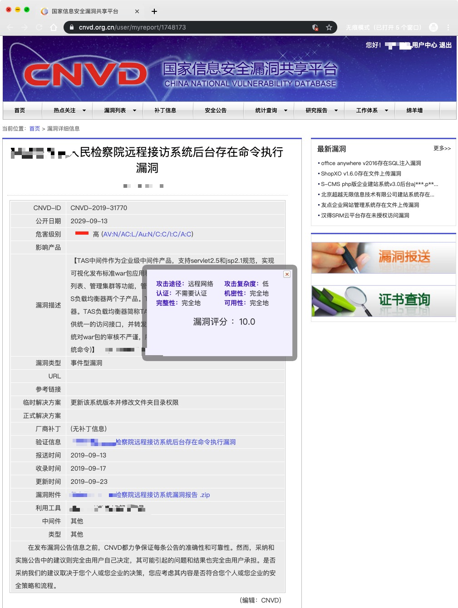
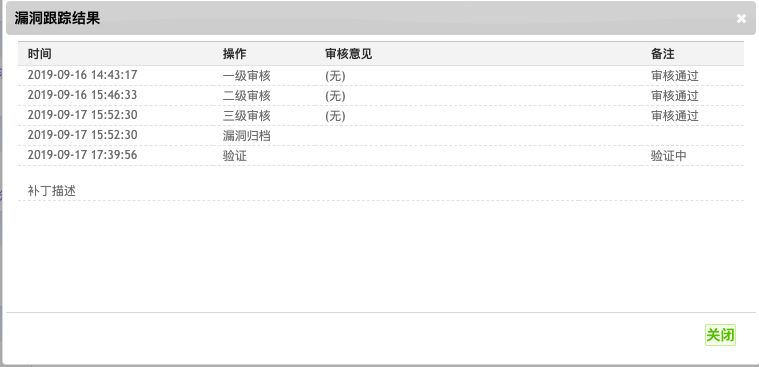

归档编号 CNVD-2019-31770记录一下漏洞归档时间线 一级审核 (2019-09-16 14:43:17) 审核通过 二级审核 (2019-09-16 15:46:33) 审核通过 三级审核 (2019-09-17 15:52:30) 审核通过 基本上三天内就过了审核 审核过完之后能看到自己漏洞的评分 (评分规则按照CVSS 2.0标准评判)  之后漏洞归档 (2019-09-17 15:52:30) 归档完毕后会漏洞验证(2019-09-17 17:39:56) 【这里需要的时间长一点 目测需要几周时间】  最后透露一下(预计下一篇文章放出批量次漏洞的POC哦~)